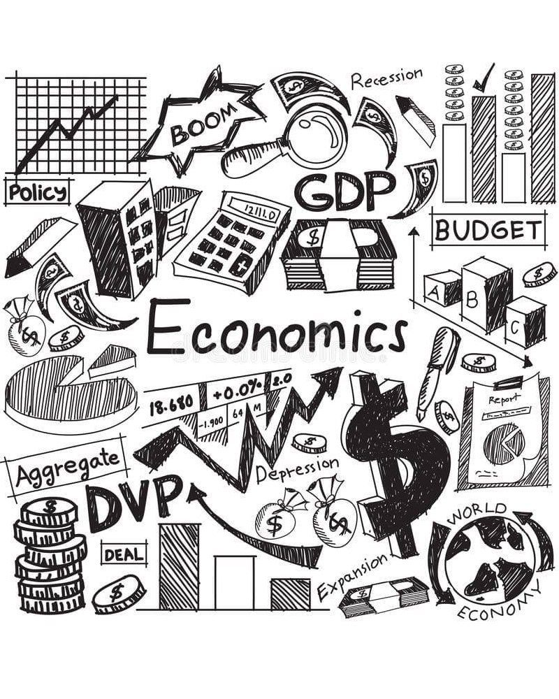
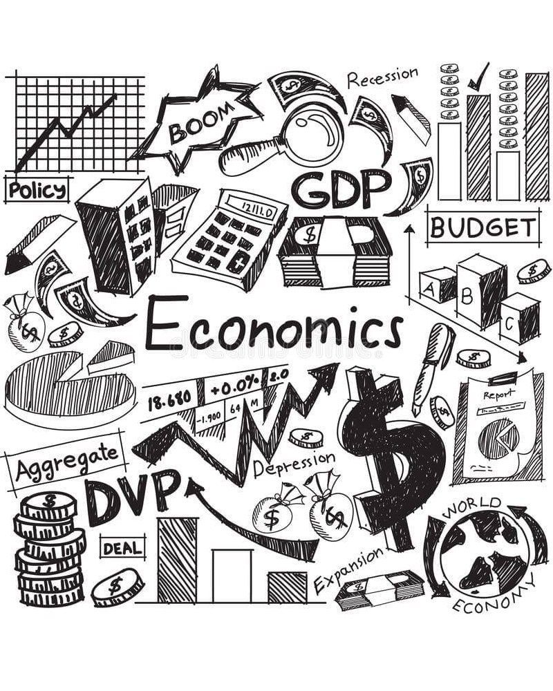

ARALING PANLIPUNAN
Ikalawang Markahan E-Portfolio
Aralin 1: Demand
Ang demand ay dami ng produkto o serbisyo na kayang bilhin ng mga mamimili sa isang takdang presyo. Ayon sa Batas ng Demand, kapag tumataas ang presyo, bumababa ang demand; at kapag bumababa ang presyo, tumataas ito.
Natutunan ko: Natutunan kong mahalaga ang ugnayan ng presyo at kagustuhan ng tao sa ekonomiya.
 

Aralin 2: Demand Function at Demand Curve
Ang Demand Function ay ang matematikal na relasyon sa pagitan ng presyo (P) at dami ng demand (Qd): Qd = a - bP. Kapag ipinakita sa grap, ito ay tinatawag na Demand Curve.
Natutunan ko: Natutunan kong mas madaling maunawaan ang ekonomiya sa pamamagitan ng graph at pormula.
Aralin 3: Supply
Ang Supply ay tumutukoy sa dami ng produkto o serbisyo na handang ipagbili ng prodyuser. Ayon sa Batas ng Supply, kapag tumaas ang presyo, tumataas din ang supply.
Natutunan ko: Natutunan kong ang presyo ay nakakaapekto rin sa desisyon ng mga negosyante.
Aralin 4: Supply Function at Mga Salik
Ang Supply Function ay pormulang Qs = c + bP na nagpapakita ng relasyon ng presyo at dami ng panustos. Nakaaapekto rito ang teknolohiya, gastos, klima, at bilang ng nagbebenta.
Natutunan ko: Natutunan kong maraming salik ang nakakaapekto sa presyo at dami ng produkto sa merkado.
Aralin 5: Elastisidad ng Demand at Supply
Ang Elastisidad ay sukatan ng kung gaano kalaki ang pagtugon ng demand o supply sa pagbabago ng presyo. Kung ang pagbabago ay higit sa 1, ito ay elastic; kung mas mababa sa 1, ito ay inelastic.
Natutunan ko: Natutunan kong may malaking epekto ang pagbabago ng presyo sa paggalaw ng merkado.
Aralin 6: Ekwilibriyo
Ang Ekwilibriyo ay kalagayang pantay ang demand at supply. Dito nagtatagpo ang dalawang curve, at ito ang tinatawag na Equilibrium Point. Kapag lumabis ang supply, may surplus; kung kulang, may shortage.
Natutunan ko: Natutunan kong natural na binabalanse ng pamilihan ang presyo at dami ng produkto.